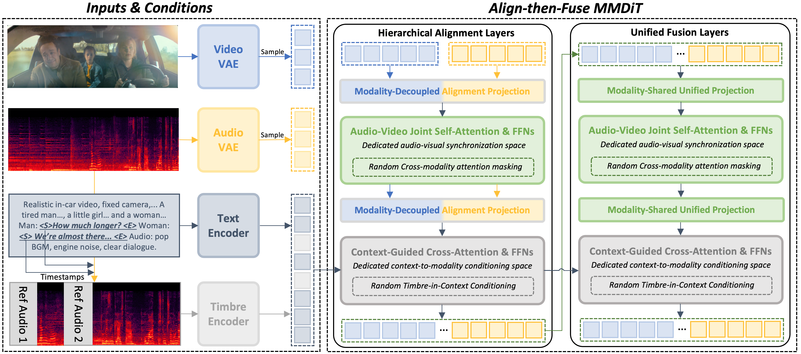
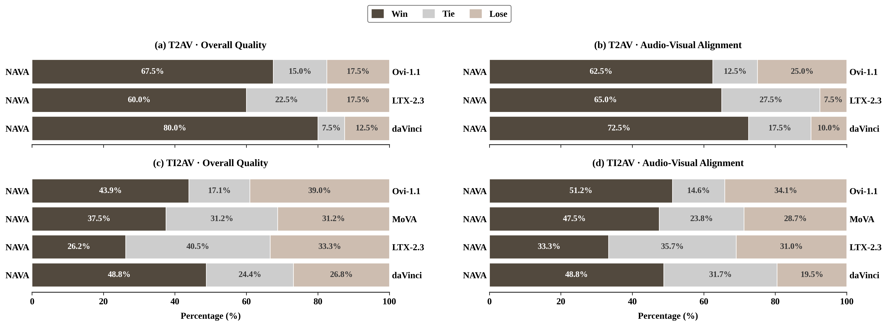

Joint audio-video generation aims to synthesize temporally synchronized and semantically coherent visual and acoustic content. Existing open-source methods mainly follow dual-tower designs, which generate audio and video in separate streams and rely on posterior alignment, or fully unified tri-modal designs, which mix textual context, audio, and video in a single shared space. These paradigms either weaken fine-grained audio-video co-evolution or couple semantic conditioning with low-level synchronization.
We propose NAVA, a Native Audio-Visual Alignment framework that formulates generation as context-conditioned native audio-visual alignment. NAVA first establishes audio-video correspondence in a dedicated alignment space and then applies context as external conditioning to guide the aligned representation.
We instantiate this formulation with an Align-then-Fuse MMDiT architecture, which progressively bridges modality-aware alignment and unified audio-video denoising. To support controllable speech generation, we further introduce Timbre-in-Context Conditioning, which binds reference timbre cues to corresponding speech spans through the context pathway.
Experiments on Verse-Bench and the Seed-TTS benchmark demonstrate that NAVA achieves superior audio-visual synchronization and video quality, competitive audio quality, and substantially improved reference-timbre controllability with only 6.3B parameters.

Figure 1. Overview of NAVA. Hierarchical Alignment Layers establish audio-video correspondence in a dedicated alignment space; Unified Fusion Layers then perform context-conditioned denoising. Timbre-in-Context Conditioning binds reference timbre cues to speech spans via the context pathway.
Table 1.General Capability on VerseBench
NAVA achieves the best AV synchronization (Sync-C / Sync-D / IB) and video quality with the smallest parameter budget.
| Model | Params | Resolution | AV-Align | Video Quality ↑ | Audio | ||||
|---|---|---|---|---|---|---|---|---|---|
| Sync-C ↑ | Sync-D ↓ | IB ↑ | WER ↓ | PQ ↑ | FD ↓ | ||||
| Ovi 1.1 | 10B | 720p | 7.4839 | 7.9791 | 0.199 | 0.636 | 0.102 | 5.8432 | 0.9418 |
| MOVA | A18B (32B) | 720p | 7.2888 | 7.808 | 0.269 | 0.603 | 0.126 | 7.2331 | 0.9222 |
| Davinci | 15B | 540p | 7.1487 | 7.8158 | 0.269 | 0.600 | 0.151 | 5.9559 | 0.9307 |
| LTX 2.3 | 19B | 512p | 7.2476 | 7.6902 | 0.337 | 0.576 | 0.106 | 6.9459 | 0.8287 |
| NAVA (ours) | 6.3B | 720p | 7.7914 | 7.5655 | 0.313 | 0.659 | 0.099 | 6.8609 | 0.8328 |
↑ higher is better↓ lower is betterBold = bestUnderline = 2nd best
Table 2.Timbre-Control Speech Performance
Audio-only models are listed as reference only — they are dedicated speech systems and not directly comparable. Among joint audio-video models, NAVA delivers speech quality close to dedicated audio-only systems.
| Category | Model | WER ↓ | Speaker Similarity ↑ |
|---|---|---|---|
| Audio-Onlyreference | CosyVoice | 4.29 | 60.9 |
| CosyVoice2 | 2.57 | 65.2 | |
| Qwen2.5-Omni | 2.72 | 63.2 | |
| Audio-Video | DreamID-Omni | 31.76 | 35.7 |
| NAVA (ours) | 4.20 | 66.7 |
Table 3.User Study
We conduct human GSB (Win / Tie / Lose) preference studies on both T2AV and TI2AV against open-source baselines (Ovi-1.1, LTX-2.3, MoVA, daVinci). NAVA achieves competitive Overall Quality across all comparisons and wins on Audio-Visual Alignment against all baselines.

All samples below are generated end-to-end by NAVA. Audio and video share a single denoising trajectory — No posterior alignment, No extra components.
We thank the open-source community for releasing strong baselines including Ovi, MOVA, Davinci and LTX, which made fair benchmarking possible. Website template inspired by the academic project pages community.